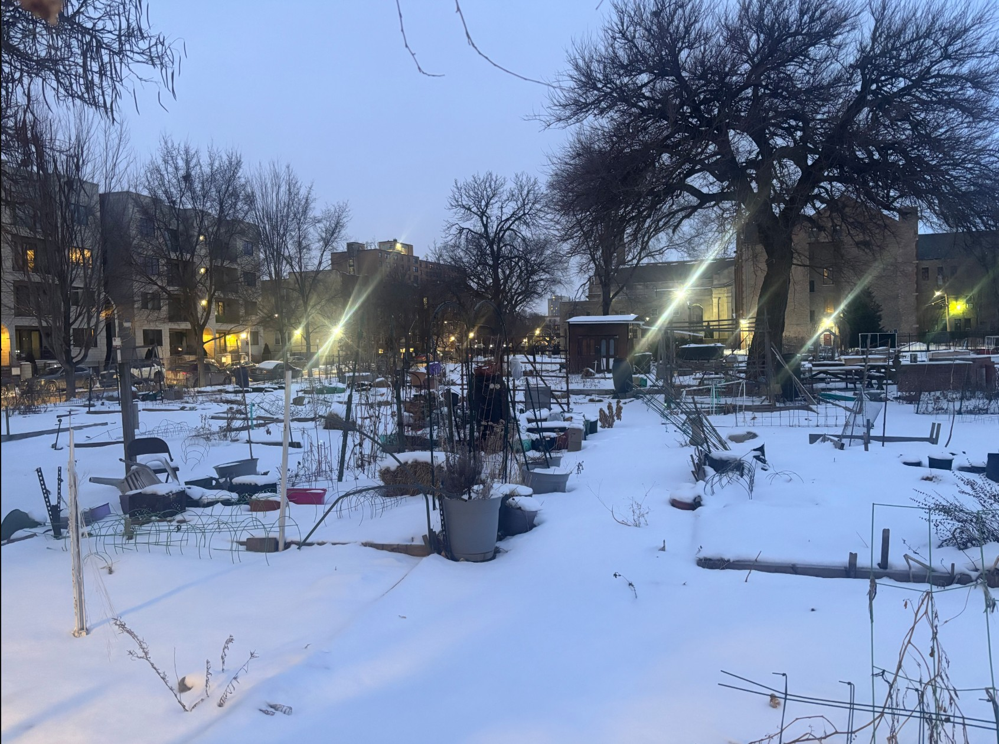

THE ART GARDEN

Chicago’s community gardens bring people together with a common goal to bring fresh, healthy, and delicious food to the community while also strengthening relationships between its members. Their impact is an important one, providing hands-on learning opportunities, unity, new experiences, and food security to communities that may lack it.

Community gardens often start with high hopes, but once initial interest is lost they become just another unused space. Often being run in less than perfect lots and by beginner gardeners, community gardens require creative solutions for challenging issues. To ensure the vitality of the garden we want to transform the space into a hub where people can work in creative arts and bond through using their creativity to take care of the garden.